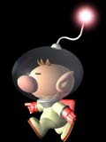
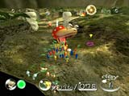
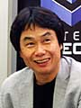
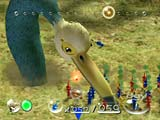
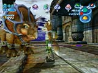
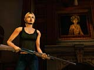
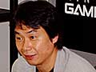

宮本さんのチームが開発している『ピクミン』について少しお聞かせください。
宮本 かなり新しいことをやっていまして、ゲームキューブの性能が活かされていると思います。100匹以上のものがそれぞれにＡＩ（人工知能）を持って、それなりにかしこい動きをしているというのは、技術的に大変なことなんです。主人公はオリマっていうんですけど、実は地味な存在で、いなくてもいいんですね。遊んでいる人自身と、ピクミンというキャラクターのゲームなんです。ユーザー自身とピクミンという敵のような味方のようなものとの関係でゲームができている。それで、ピクミンはどんどん生まれてどんどん死んでいくんです。「世の中ってどんどん生まれて死んでいくんだな」っていう構造がよくわかる深いゲームです。水を与えると成長しますし、植物みたいですね。愛着をもって自分で育てていけば、どんどん巣の中でアリのように増やしていけるんですよ。プレイヤーが指示をあたえると、そのあとは自分たちで行動していくんです。敵にあうと攻撃してくれるし、木があると倒してくれるし。
|
| 指揮官みたいにピクミンに指示を与えていくんですか。 |
宮本 そうですね。でも、ウォーシミュレーションゲームの指揮官と兵隊みたいに殺ばつとしたものではなく、身近な友達のような関係です。指示をあたえるのはすごく簡単で、カーソルを動かしてＡボタンとＢボタンを押すだけ。ほかのボタンもいろいろ使えるんですけど、ゲームそのものは２つのボタンでほとんどできます。もうちょっと技を使いたい人は、Ｃスティックを使うと、自分の連れているピクミンの群れが自分の好きな方向にザーッと移動する。Ｘボタンを押すと、みんな解散して休むという。
|
| いままでにない、ちょっと変わったゲームですね。 |
宮本 そうですね。マップも少ないし、気軽に遊べると思います。ちょっと『ムジュラの仮面』のようなところがあって、30日間でバラバラになった宇宙船のパーツを集めないといけないんです。これがなかなか大変で、たぶん最初は集められなくて何度も遊ぶようになると思うんですけど、上手になってくるとスケジュールが組めるんですね。「今日は朝からここへ行って黄色いピクミンをいっぱいにして、この部品を取って、もし時間があればお仕事をして夕方にはピクミンをつれて帰ろう」とか。夜になるとモンスターが出て来て、ピクミンが食べられちゃうので、ちゃんと自分が巣までつれて帰らなくちゃいけないんです。子どもがチームを運営するとか、マネージャーとしてどう行動したらいいかがわかる、将来の管理職を育てる、すごく学習効果の高いゲームじゃないかと思うんですけどね（笑）。自然の仕組みも、なんとなくわかるゲームだと思います。
|
| これから、ソフトとしては任天堂キャラクターのものと、『ピクミン』のようなまったく新しいものが出てくる感じでしょうか。 |
宮本 そうですね。半々でいこうかなと思います。来年は『スターフォックス アドベンチャー』というのが出ます。今度のスターフォックスはゼルダのようなアドベンチャータイプのゲームです。それから、これは売りかたが難しいんですが、『エターナルダークネス』のような大人のゲームも作っていますし、ラインナップは幅広いですよ。
|
| ゲームキューブに関しては低年令層だけでなく、全世代に向けてというコンセプトが強いですね。 |
宮本 ええ。でも、本来は任天堂ってそういう会社なんですよ。各メーカーの思惑で「任天堂は子ども向き」と言ってしまえば、自分たちと競合しないというのがあったのかもしれませんが、いつのまにかそう言われるようになっていました。本当は、そんなつもりは全然ないんです。ファミコン時代も、子どもから大人までが遊んでいたわけですから。
※Ｅ３＝アメリカで開かれている世界最大のビデオゲーム関連のトレード・ショウ。 |